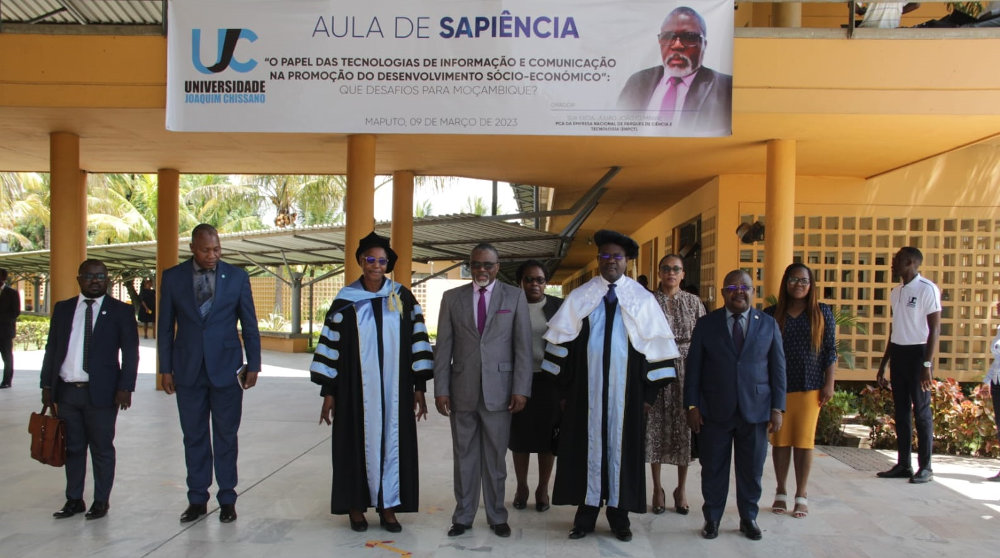

Estudantes da Faculdade de Ciências e Tecnologia na India entre os
dias 22 à 25 de Novembro de 2022, 10 estudantes da Universidade
Joaquim Chissano (UJC) participaram na UNESCO India-África Hackaton
que teve lugar na Universidade Gautam Buddha, em Uttar Pradesh, Índia.
Este evento tem como objectivo reunir estudantes universitários de
países de África para debater, encontrar soluções, trocar ideias e
experiências, bem como resolver problemas relacionados com saúde,
água, terra e tecnologias.

O Reitor da Universidade Joaquim Chissano (UJC), Prof. Doutor José
Mário Magode acompanhado pela Vice-reitora para área Administrativa,
Prof. Doutora Ana Nhampule visitou, no mês de Outubro de 2022 à
Egypt-Japan University of Science and echnology (E-JUST). A visita
enquadrada no plano de cooperação académica da UJC com outras
universidades, tinha como objectivos colher experiências da E-JUST em
matérias relacionadas com as TIC, governação e gestão universitária
bem como o estabelecimento de parceria com vista ao desenvolvimento
institucional da Faculdade de Ciências e Tecnologias.
Ainda no âmbito da visita, no dia 12 de Outubro foi assinado um Memorando de Entendimento Entre a UJC e E-JUST, representadas pelo Magnifico Reitor e Presidente, respectivamente. A luz do documento rubricado, as duas instituições irão cooperar nas áreas de pesquisa básica e aplicada e transferência de tecnologia, publicação de resultados de pesquisas e outras, troca de convites académicos, para além de intercâmbio de docentes e funcionários administrativos para capacitação. Segundo o Director da Faculdade de Ciências e Tecnologia, Prof. Doutor Hilário Langa, e o Chefe de Departamento de Tecnologia de Informação e Comunicação e Biblioteca da mesma faculdade, Cláudio Duvane, a deslocação serviu para colher experiências em áreas relacionadas com desenvolvimento curricular, metodologias de ensino e aprendizagem, bem como a mobilização de recursos financeiros e outros para o desenvolvimento institucional.
Ainda no âmbito da visita, no dia 12 de Outubro foi assinado um Memorando de Entendimento Entre a UJC e E-JUST, representadas pelo Magnifico Reitor e Presidente, respectivamente. A luz do documento rubricado, as duas instituições irão cooperar nas áreas de pesquisa básica e aplicada e transferência de tecnologia, publicação de resultados de pesquisas e outras, troca de convites académicos, para além de intercâmbio de docentes e funcionários administrativos para capacitação. Segundo o Director da Faculdade de Ciências e Tecnologia, Prof. Doutor Hilário Langa, e o Chefe de Departamento de Tecnologia de Informação e Comunicação e Biblioteca da mesma faculdade, Cláudio Duvane, a deslocação serviu para colher experiências em áreas relacionadas com desenvolvimento curricular, metodologias de ensino e aprendizagem, bem como a mobilização de recursos financeiros e outros para o desenvolvimento institucional.

A Universidade Joaquim Chissano (UJC) organizou no dia 21 e 27 de
Março de 2023 o evento de recepção oficial e indução dos novos
ingressos, a cerimónia presidida ao mais alto nível pelo Magnífico
Reitor, José Magode, contou com a presença do director da FCT e todas
as unidade orgânicas relevante para o efeito. O Reitor, durante o
discurso disse que o evento era carregado de simbolismo uma vez que
marca a recepção dos novos membros a comunidade universitária UJC,
adiante felicitou os novos ingressos por terem sido admitidos. Ainda
no seguimento do seu discurso de abertura, José Magode afirmou o dia
21 e 27 representa um marco na prossecução da missão da UJC, que é a
produção, transmissão e disseminação de conhecimento, da ciência e das
tecnologias. “O público alvo desta missão sois vós. Vós devereis
desenvolver o máximo esforço visando tirar o melhor proveito desta
missão institucional em vosso benefício, de vossas famílias, do pais
do Mundo”.

Universidade Joaquim Chissano (UJC) realizou no dia 9 de Março de 2023
a aula de sapiência, cujo tema foi “O Papel das Tecnologias de
Informação e Comunicação na Promoção do Desenvolvimento
Sócio-Económico”: Que Desafios para Moçambique?” que foi proferida
pelo físico e Presidente do Conselho de Administração (PCA) da Empresa
Nacional de Parques de Ciência e Tecnologia (ENPCT), Julião Júlio
Cumbana O evento que contou com a presença da comunidade científica da
UJC e convidados, foi presidido pelo Magnífico Reitor da UJC,
Professor Doutor José Mário Magode, que no presidium para além da
ilustre figura do dia, também se fez acompanhar pela Vice-reitora para
Área Administrativa, Professora Doutora Ana Nhampule. Em suas notas de
boas vindas, o Magnífico Reitor fez a apresentação do currículo da
figura do dia, onde para além do percurso acedémico, destacou que é
autor de mais de 20 publicações em jornais nacionais e internacionais,
bem como a sua participação em debates temáticos em diversas rádios e
televisões nacionais. Por sua vez Julião Júlio Cumbana, quando
convidado para tomar a palavra, afirmou que não podia começar sem
definir os principais conceitos associados aos temas escolhidos. De
seguida fez uma resenha histórica da evolução tecnológica, tendo a
fragamentado em 4 grandes fases, nomeadamente a primera Revolução
Industrial, com a descoberta da máquina a vapor em 1765, segunda, com
a descoberta da luz eléctrica em 1879, a terceira com o surgimento de
equipamentos electónicos e descoberta da internet, e por fim a quarta,
que inicia em 2010 com o uso das tecnologias vinculadas à internet
para a melhoria e transformação da produção industrial.